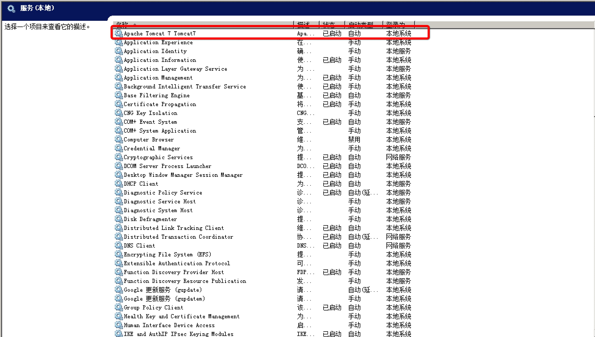

3.1 Tomcat 下部署
1. 部署
把打包好的 gbros-web-1.0.war 名称修改为：gbros-web.war，然后把该 war 包部署到服务器 Tomcat环境中。
拷贝位置为：Tomcat > webapps_pro > war 下。
2. 设置环境变量及设置配置数据库参数
第一步：在 Windows 系统中建立 EAD_HOME 系统变量，变量值为 EAD 根路径；

第二步： 拷贝 EAD 配置文件至 EAD 根路径

第三步：修改配置数据库，配置数据；


3. Windows 下启动 Tomcat
第一种方式：Windows 服务方式启动
在 Windows 服务中启动 Tomcat 服务；

第二种方式：命令行方式启动
在 Windows 服务中，启动 Tomcat 或者在 Tomcat > bin 下，启动 startup.bat。
当看到以下界面时，说明启动成功：